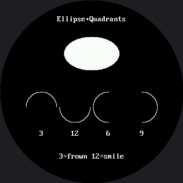

Drawing Ellipses¶
Here's the trick behind every curved eyebrow, every smiling mouth, and every eye in this book:
ellipse() can draw just one quarter of a shape at a time. Master that and you can build an
entire emotional range out of a single function — on this 360×360 screen exactly the same way
you would on the smaller 1.2" kit.
What Changed From the OLED Kit¶
The call still starts with shapes.ellipse(display, ...) instead of oled.ellipse(...), and the
reason is the same one the smaller kit ran into: the GC9B72 driver has no ellipse at all.
framebuf's version was compiled into the MicroPython firmware, in C, for free. This driver is not
built on framebuf, so shapes.py rebuilds the missing commands in about fifty lines of readable
MicroPython. You can open the file and read the whole thing — one of the lines in it is the ellipse
equation you already know from math class.
| OLED kit | This kit | |
|---|---|---|
| Where the code lives | Compiled into the firmware | lib/shapes.py, in MicroPython |
| How you call it | oled.ellipse(...) |
shapes.ellipse(display, ...) |
| Can you read it? | No | Yes — and you should |
| How it fills | Pixel runs inside C | One hline() per row |
The Quadrant Fill Codes¶
The optional quad_code restricts drawing to one or more quarters of the ellipse. Add the numbers
together to combine quarters. These are the same numbers the OLED kit used, and the same numbers
the 1.2" smartwatch kit uses too — they mean the same thing on every kit in this book:
| Code | Quarter | Add them for |
|---|---|---|
| 1 | Top-right | 3 = top half — a frown |
| 2 | Top-left | 12 = bottom half — a smile |
| 4 | Bottom-left | 6 = left half |
| 8 | Bottom-right | 9 = right half |
Two Characters Apart, Opposite Feelings
 Mask 3 is the frown. Mask 12 is the smile. That is the entire difference between a robot that looks pleased to see you and one that looks disappointed in you — and the Five Broken Faces lab plants that exact bug on purpose.
Mask 3 is the frown. Mask 12 is the smile. That is the entire difference between a robot that looks pleased to see you and one that looks disappointed in you — and the Five Broken Faces lab plants that exact bug on purpose.
Sample Program Code¶
One plain filled ellipse for reference, then all four half-codes drawn as outlines so each arc stands on its own.
import config
import shapes
display = config.init_display()
WHITE = config.WHITE
BLACK = config.BLACK
NO_FILL = config.NO_FILL
FILL = config.FILL
FONT = config.SMALL_FONT
CENTER_X = config.CENTER_X # 180
display.fill(BLACK)
# "Ellipse+Quadrants" is 17 characters, and 17 * 8 = 136 px in this font.
# Centering it is 180 - 136 // 2, which is where the smartwatch kit's 52
# came from too (120 - 136 // 2) -- same formula, different center.
#
# It stays in the SMALL font on purpose. Those same 17 characters in the
# 16x32 font would be 272 px wide, and this row sits 150 px above center,
# where the safe circle is only about 151 px across. 136 fits there with
# roughly 7 px to spare on each side; 272 would not fit anywhere on a
# 360 px round screen. Dense, wide strings stay 8x16.
TITLE = "Ellipse+Quadrants"
display.text(FONT, TITLE, CENTER_X - (len(TITLE) * FONT.WIDTH) // 2, 30,
WHITE, BLACK)
# a plain filled ellipse for reference
shapes.ellipse(display, CENTER_X, 105, 54, 33, WHITE, FILL)
# four quadrant fill codes, drawn as outlines so each arc stands out
QUADRANTS = (
(3, "top half"),
(12, "bottom half"),
(6, "left half"),
(9, "right half"),
)
x = 81
for code, name in QUADRANTS:
shapes.ellipse(display, x, 210, 30, 30, WHITE, NO_FILL, code)
# The caption under each arc is one or two characters, so it gets
# offset by half of its own width. The smartwatch kit used a fixed -8,
# which only ever centered the two-character codes.
caption = str(code)
display.text(FONT, caption,
x - (len(caption) * FONT.WIDTH) // 2, 255, WHITE, BLACK)
x += 66
FOOTER = "3=frown 12=smile"
display.text(FONT, FOOTER, CENTER_X - (len(FOOTER) * FONT.WIDTH) // 2, 300,
WHITE, BLACK)
Here's what that program draws on the display:

Read that row left to right, same as on the smaller kit. Code 3 curves like a frown, code 12 curves like a smile, and codes 6 and 9 are the left and right halves you will use for a smirk.
Why the Captions Stayed Small¶
Every radius, spacing, and shape position in that code is the 1.2" kit's number multiplied by
1.5 — this screen is 360 px across instead of 240, so CENTER_X moved from 120 to 180 and the
ellipse itself grew from a 36×22 oval to a 54×33 one. But look closely at the two captions,
"Ellipse+Quadrants" and "3=frown 12=smile", and you'll notice they did not scale: the bitmap
font is a fixed 8×16 grid of pixels, baked into lib/, so those same 17-character strings are
still exactly 136 px wide whether the screen around them is 240 px or 360 px. On this kit,
face.label() was promoted to a bigger 16×32 font for short names like "Surprised" — but these
two captions are dense, 17-character strings drawn with plain display.text(), not label(), and
they deliberately stayed in the small font. At 272 px wide, the same text in the big font would
not fit anywhere on a 360 px round screen; at 136 px, the small font clears the safe circle with
room to spare. Bigger screen does not always mean bigger text — sometimes it just means more room
around the same text.
Thicken Every Curve
 A one-pixel arc on a 360-pixel screen still reads as a scratch, not a mouth — the screen got bigger, but a pixel did not. Every face in this kit draws its curves several times, one pixel apart — look for
A one-pixel arc on a 360-pixel screen still reads as a scratch, not a mouth — the screen got bigger, but a pixel did not. Every face in this kit draws its curves several times, one pixel apart — look for for offset in range(STROKE) in the face labs.
Things to Try¶
- Turn the frown into a smile. Change the first quadrant code from 3 to 12 and watch the arc flip. Two characters, opposite mood.
- Read the source. Open
lib/shapes.pyand find the loop insideellipse(). It walks one row at a time and draws a horizontal run. This screen has 2.25 times as many pixels as the 1.2" kit's — that means 2.25 times as much drawing to do, which is exactly the kind of question the How Fast Is a Face? lab is built to measure. - Make it slow on purpose. Change the fill branch in
shapes.pyto usedisplay.pixel()in a loop and run this lab again. Same picture, visibly slower — you just found where the speed lives. - Confirm the arc positions are safe. The four arcs sit at x = 81, 147, 213, 279 — the 1.2"
kit's 54, 98, 142, 186 scaled by 1.5 — each with a 30 px radius. Check every one against
config.SAFE_RADIUS(168) withconfig.inside_circle(). Scaling a coordinate always moves it away from the center, which is how a layout that fit on a smaller round screen can end up under the bezel on a bigger one.
References¶
- Drawing Circles — the special case where both radii are equal
- The Emotion Table — where the quadrant code becomes one column of a data table
- Five Broken Faces — the inverted-mask bug, planted on purpose
- Drawing Ellipses on the 1.2" kit — the same lab on the smaller 240×240 screen